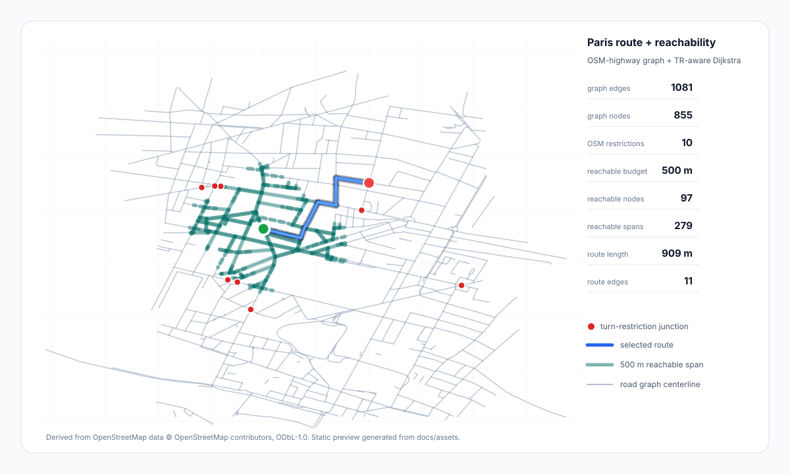

Current main combines the Paris turn-restriction map preview, lane-count baselines, cross-city tuning, and float32 dtype checks.

Interactive Map Paris grid route + reachability OSM-highway graph · 10 mapped turn restrictions · 500 m service-area overlayroute --explain emits engine choice, fallback reason,
expanded states, queued states, route edge count, and total length.
This panel loads the generated sample and compares safe A* against
the Paris turn-restriction fallback.
Open generated diagnostics JSON